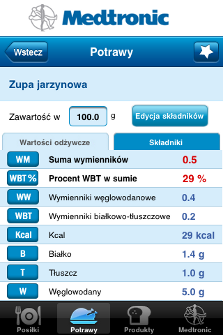
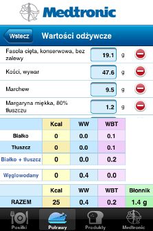
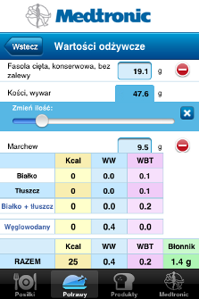
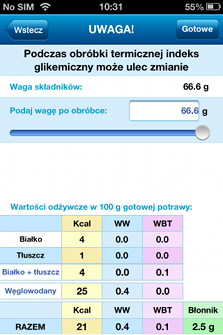

Po dodaniu potrawy lub posiłku możliwa jest edycja jego składników - zmiana ich proporcji oraz ich usunięcie.
Nie jest możliwa edycja wagi poszczególnych składników potraw dodanych domyślnie w aplikacji.
Edycja własnej potrawy lub posiłku:
-
Należy wybrać daną potrawę/posiłek z listy, aby otworzyć ekran szczegółów. Wybrać przycisk "Edycja składników".

-
Pojawi się ekran z listą składników i podsumowaniem ich wartości odżywczych.

-
Na liście można dowolnie zmieniać wagę składników - należy dotknąć pole wagi składnika, aby pojawił się suwak zmiany wagi. Po ponownym kliknięciu na wagę można wpisać wagę dokładniej - za pomocą klawiatury. Niebieski krzyżyk zamyka suwak wagi.

-
Tylko dla potraw: jeśli potrawa została dodana jako obrabiana termicznie pokaże się ekran do wpisania wagi gotowej potrawy, gdyż ilość wymienników na 100g gotowej potrawy uległa zmianie. Zmianie mógł również ulec indeks glikemiczny.
